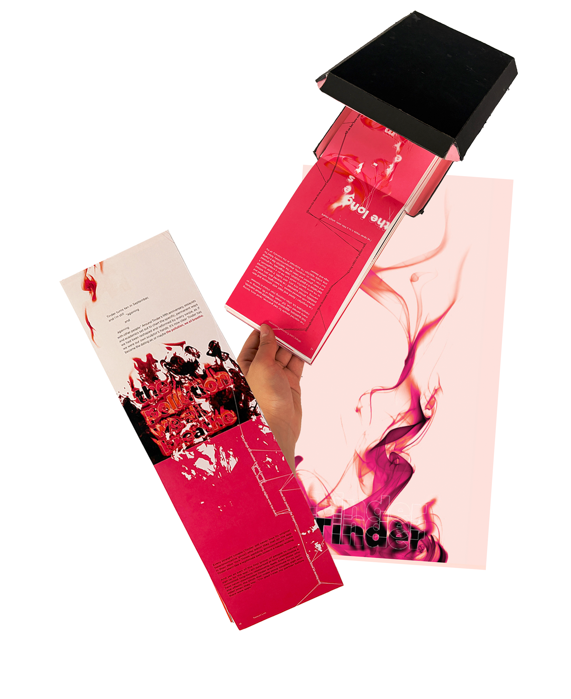

Love that Endures,
Love that Evaporates
Year
Medium
Measurement
Instructor
2025
Indesign, Photoshop
4.5 in x 8 in
Amy Auman

Context
This book is built upon the meeting of two texts separated by more than a millennium: Bai Juyi's poem The “Song of Everlasting Sorrow” and Allison P. Davis's article “Tinder Hearted”. Presented together, these works form a sharp contrast between the enduring devotion from the Tang dynasty and the swipe-based intimacies of contemporary romance.
Strategy
The book can be read in two directions: Bai Juyi's poem unfolds horizontally, inspired by the long handscrolls of early China, while Davis's article runs vertically, echoing the upright orientation of mobile screens. The former flows through continuous, unbroken strings of text; the latter burns, fragments, and evaporates across the page. These contrasting formal strategies mirror two distinct modes of love: one enduring, the other fleeting. At moments, the texts collide and interact—for instance, flames licking through the strings—generating a third narrative that emerges from their tension.